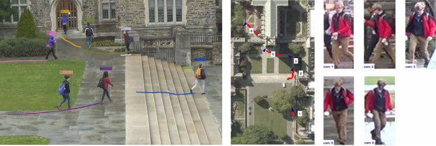
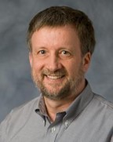
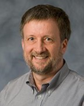

ReID and MTMCT
Dates:
Paper submission deadline: 2017 April 1 2017 April 7 (11:59 pm PST)
Rebuttal period: 2017 April 17-21 10-14
Camera ready deadline: 2017 April 27
Navigation:
1st Workshop on
Target Re-Identification and
Multi-Target Multi-Camera Tracking
In conjunction with CVPR 2017
July 2017, Honolulu
This workshop brings together researchers from two subfields of computer vision that have seen growing activity in the past few years: Target Re-Identification (ReID) and Multi-Target Multi-Camera Tracking (MTMCT). This workshop explores opportunities for cross-fertilization between these two thriving and important subfields of computer vision and aims to deepen discussions on future directions.
Call for papers
This one day workshop will host invited speakers, poster sessions and oral presentations. We encourage authors to explore pollination between the fields of ReID and MTMCT and take on research questions, rather than just obtaining state-of-the-art results on benchmarks. Examples of such questions are:- How much do initial detections influence MTMCT or ReID?
- How and which ReID descriptors can be used by MTMCT systems?
- What can we learn by evaluating a MTMCT system in terms of ReID, and vice-versa?
- What makes these problems hard (and easy)?
- How can ReID and MTMCT benefit each other?
- How can MTMCT and ReID capitalize on recent large-scale datasets?
- How to deal with large-scale indexing/optimization in ReID and MTMCT?
- Do we need largely annotated datasets for ReID and MTMCT?
- Do semantic attributes help in matching identities in ReID and MTMCT?
- How can re-ranking schemes improve ReID performance?
Problem definitions and motivation
Let a query be an image that tightly bounds a single instance of a target of interest (people, vehicles, etc.). Assume that a gallery contains images of several targets in this format as well as distractor images with arbitrary content. Target re-identification retrieves all and only the gallery images of the same target as the query.Given a set of videos taken by multiple cameras, multi-target multi-camera tracking places tight bounding boxes around all targets in the videos and partitions the boxes into sets called trajectories. A trajectory is the set of all boxes that bound a unique target, ordered by time.
These two problems are clearly different. However, they share several common aspects as well. Here, you can find some of the (dis)similarities that we could think of. Can you come up with more?
Submission
To submit a new paper to the workshop, you have to do so through the CMT website. The workshop paper submissions should be in the same format as the main conference. Please refer to the CVPR 2017 author guidelines for more details.
Invited speakers

Cordelia Schmid, INRIA Title TBA
Xiaogang Wang, Chinese University of Hong Kong Title TBA
Amit Roy-Chowdhury, University of California Riverside Title TBA

Mubarak Shah, University of Central Florida Title TBA
Chunhua Shen, University of Adelaide Title TBA
Wei-Shi Zheng, Sun Yat-sen University Title TBA

Anton Milan, University of Adelaide Title TBA

Laura Leal-Taixé, Technical University Munich Title TBA
Program (tentative)
The following program will change according to the number of accepted papers and assigned oral presentations.| 9:00 | Welcome and opening remarks |
| 9:15 | Invited speakers |
| 9:45 | Oral presentations |
| 9:00 | ... |
People involved
Organizers:

 

Rita Cucchiara (University of Modena and Reggio Emilia)
Wen Gao (Peking University)
Shaogang Gong (Queen Mary University of London)
Thomas S. Huang (University of Illinois Urbana-Champaign)
Ergys Ristani (Duke University)
Francesco Solera (University of Modena and Reggio Emilia)
Qi Tian (University of Texas at San Antonio)
Carlo Tomasi (Duke University)
Program committee chairs:


Simone Calderara (University of Modena and Reggio Emilia)
Cees G.M. Snoek (University of Amsterdam)
Jingdong Wang (Microsoft Research)
Shiliang Zhang (Peking University)
Program committee members: Horst Bischof, Roman Pflugfelder, Octavia Camps, Amit Roy-Chowdhury, Andrea Cavallaro, Peter Roth, Chen Change Loy, Ling Shao, Dimitrios Makris, Slawomir Bak, Ratnesh Kumar, Gerard Medioni, Xinchao Wang, Christian Micheloni, Liang Zheng and Vittorio Murino.